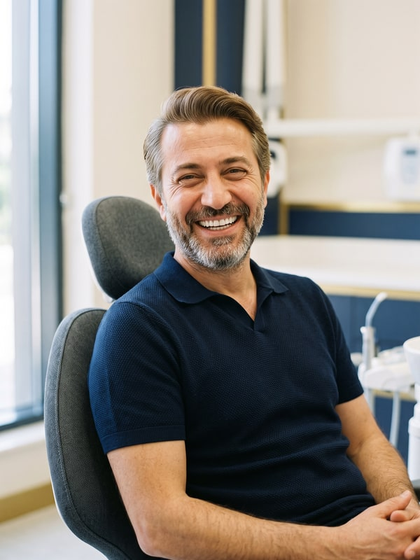

Chaque sourire est une part importante de l'expression de votre visage. Les histoires
ci-dessous montrent comment une transformation se planifie dans notre clinique, et comment nous visons un
résultat naturel, à travers quatre traitements différents.
Avertissement : les histoires, noms et images de cette page sont représentatifs ;
ils ne décrivent ni n'identifient aucun patient précis, et ne constituent ni un témoignage de patient ni
le récit d'une expérience vécue. Le déroulé et le résultat de chaque traitement varient d'une personne à
l'autre ; la décision se prend après un examen par un chirurgien-dentiste.
Facettes · Smile DesignImage représentative
L'histoire de transformation d'Elif
TR : Elif Hanım'ın Değişim Hikayesi
Elif n'est pas venue à notre clinique avec une plainte précise, mais pour découvrir si un rendu plus
équilibré et plus naturel était possible pour son sourire. L'évaluation a regardé ensemble la forme des
dents, la couleur et la ligne du sourire. Nous avons préparé un plan personnel qui préservait le naturel
propre à Elif, sans changer l'expression de son visage.
Comment cela a commencé ?
Elif ne vivait aucun problème de santé dentaire notable. Elle sentait pourtant que les différences de
couleur et les petites irrégularités de forme de ses dents de devant, en particulier, pesaient sur
l'allure générale de son sourire. Ce qu'elle voulait n'était pas un changement spectaculaire, mais un
sourire plus équilibré et plus naturel.
Le bon plan, un résultat naturel
Pendant l'évaluation, nous avons regardé non seulement les dents elles-mêmes, mais aussi, ensemble, les
traits d'Elif, le mouvement de ses lèvres et sa ligne de sourire naturelle. Nous avons observé que les
différences de couleur et les petits désaccords de forme des dents de devant touchaient le sourire dans
son ensemble.
En composant le plan de traitement, notre objectif n'était pas de créer un changement qui attire l'œil.
Nous nous sommes concentrés sur le dessin d'un sourire naturel et équilibré, préservant l'expression
distinctive d'Elif. Forme, longueur et teinte des dents se sont planifiées autour de cette approche, et
préserver la structure dentaire naturelle est restée l'une des priorités centrales tout du long.
Des restaurations céramiques esthétiques ont traité les différences de couleur et de forme des dents de
devant d'Elif. Forme et teinte se sont choisies dans des tons naturels, pour que les dents s'accordent au
visage. Tout au long du traitement, le soin a été mis à préserver le caractère du sourire existant
d'Elif et à ne changer que là où c'était réellement nécessaire.
Le résultat
À la fin du traitement, le sourire d'Elif portait une harmonie de couleur et de forme plus équilibrée.
Mais ce qui comptait le plus pour Elif : le résultat paraissait naturel et préservait l'expression de son
visage. Son nouveau sourire ressemblait moins à un changement spectaculaire qu'à une part naturelle de
son visage.
Implant

Image représentative
L'histoire de transformation de Murat
TR : Murat Bey'in Değişim Hikayesi
Murat est venu à notre clinique pour l'espace laissé par une molaire perdue des années plus tôt. Sa
priorité n'était pas l'esthétique — c'était de mâcher à nouveau confortablement. L'évaluation a regardé
non seulement la dent manquante, mais ensemble l'équilibre masticatoire, l'état des dents voisines et la
structure osseuse.
Comment cela a commencé ?
Murat mâchait depuis longtemps d'un seul côté. Il avait remarqué que cette habitude fatiguait peu à peu
ses autres dents et les rendait sensibles. Ce qu'il voulait : une solution durable, utilisable sans y
penser au quotidien — impossible à distinguer de ses dents naturelles.
Le bon plan, un résultat naturel
Volume osseux et structures voisines se sont évalués sur des clichés de tomographie 3D, et la position
de l'implant s'est planifiée au millimètre. Notre objectif n'était pas seulement de combler l'espace —
c'était de créer un résultat qui répartisse les forces masticatoires également et s'accorde à la
gencive.
La période de cicatrisation s'est suivie par des contrôles réguliers ; la teinte et la forme de la
couronne définitive se sont choisies au plus près des dents existantes de Murat.
L'implant s'est posé en une seule séance sous anesthésie locale ; la couronne définitive s'est fixée une
fois l'os fusionné avec l'implant. Tout au long du parcours, nous avons aussi passé en revue ensemble les
habitudes d'hygiène de Murat et composé un plan de soins personnel.
Le résultat
À la fin du traitement, Murat avait retrouvé une mastication équilibrée, des deux côtés. Ce qui comptait
le plus pour lui : l'implant ne se remarquait pas dans la vie de tous les jours. « Pouvoir manger sans
penser à quelle dent est l'implant » — voilà le résultat le plus naturel de tout le parcours.
ZirconeImage représentative
L'histoire de transformation de Zeynep
TR : Zeynep Hanım'ın Değişim Hikayesi
Zeynep est venue à notre clinique pour d'anciennes couronnes, posées des années plus tôt, dont la
couleur avait changé avec le temps. Son sourire lui paraissait fatigué — mais elle tenait tout
particulièrement à éviter ce rendu ultra-blanc et uniforme qui donne l'impression de dents
« visiblement faites ».
Comment cela a commencé ?
Il existait des désaccords de couleur aux limites des anciennes couronnes, et une ombre le long de la
gencive. Ce que Zeynep voulait n'était pas un nouveau sourire ; c'était une version plus lumineuse et
plus harmonieuse du sien. Cette attente a posé le cadre de tout le plan.
Le bon plan, un résultat naturel
Le choix de la teinte n'a pas été une décision expédiée ; il s'est évalué à la lumière du jour, sous
différents angles, et aux côtés des dents voisines. Nous avons choisi une armature en zircone à la
translucidité proche de l'émail naturel, et la santé gingivale s'est intégrée au plan, pour lever l'ombre
le long de la gencive.
Pendant l'essayage, nous avons écouté les retours de Zeynep point par point ; les petits réglages de
forme se sont terminés avant la pose définitive.
Les anciennes couronnes se sont retirées et la santé gingivale s'est soutenue d'abord ; les nouvelles
couronnes se sont fixées définitivement après une période d'essai avec des dents provisoires. Les traits
et le teint de Zeynep ont été les facteurs décisifs des choix de forme et de teinte.
Le résultat
À la fin du traitement, le sourire de Zeynep portait un rendu plus lumineux et plus cohérent. Selon ses
propres mots, le résultat le plus précieux : personne n'a demandé « Tu t'es fait refaire les dents ? » —
tout le monde a juste dit « Tu as vraiment bonne mine aujourd'hui. »
BlanchimentImage représentative
L'histoire de transformation d'Emre
TR : Emre Bey'in Değişim Hikayesi
Emre est venu à notre clinique pour les colorations laissées sur ses dents par le café bu en plus grande
quantité pendant une période chargée au travail. Ses dents étaient saines ; ce qu'il voulait n'était pas
un changement étendu, mais que son sourire retrouve son ancien éclat.
Comment cela a commencé ?
L'examen a trouvé des colorations de surface et une légère accumulation de tartre. L'agenda d'Emre étant
exigeant, la rapidité et le confort du parcours comptaient aussi pour lui. Les attentes se sont posées
sur un socle réaliste : l'objectif était d'éclaircir la teinte naturelle propre de la dent.
Le bon plan, un résultat naturel
Avant le blanchiment, la surface dentaire s'est préparée par un détartrage-polissage, pour que le gel
touche la dent de façon homogène. Le blanchiment au fauteuil s'est mené en une seule séance contrôlée,
gencives protégées tout du long. Les conseils de suivi se sont planifiés individuellement, pour ne pas
déclencher de sensibilité.
Après le traitement, il a été conseillé à Emre d'éviter les aliments et boissons très colorés les 48
premières heures ; nous avons aussi passé en revue ensemble ses habitudes de soins quotidiennes, pour
faire durer le résultat.
Le résultat
Après la séance unique, les dents d'Emre ont atteint une version plus lumineuse de leur propre teinte
naturelle. Pour lui, le meilleur du résultat : un parcours commencé sur la pause déjeuner s'est terminé
le jour même, et son sourire a gagné une fraîcheur discrète et naturelle.
Avertissement : les histoires, noms et images de cette page sont représentatifs ; ils ne
décrivent ni n'identifient aucun patient précis, et ne constituent ni un témoignage ni le récit d'une
expérience de patient. Les parcours et résultats de traitement varient d'une personne à l'autre ; le
diagnostic et la décision de traitement se prennent après un examen par un chirurgien-dentiste. Dernière
mise à jour : 30 août 2026 · Contenu approuvé par : Dr Yasin [Nom].
📋 Transfert vers WordPress
Chaque histoire peut se publier comme page propre (par ex.
/fr/histoire-patient/facettes-avant-apres/) ou toutes ensemble sur une page unique
Histoires de transformation du sourire. L'avertissement de contenu représentatif est prêt dans
chaque bloc — ne le supprimez pas (requis pour la conformité réglementaire). Les photos sont dans
le dossier img/ (JPG 600×800) ; téléchargez-les via les liens ci-dessous et téléversez-les dans la
médiathèque WP, en gardant la légende « Image représentative » sous chaque photo.


{kind=link}
{kind=link}
{kind=link}
{kind=link}
{kind=link}